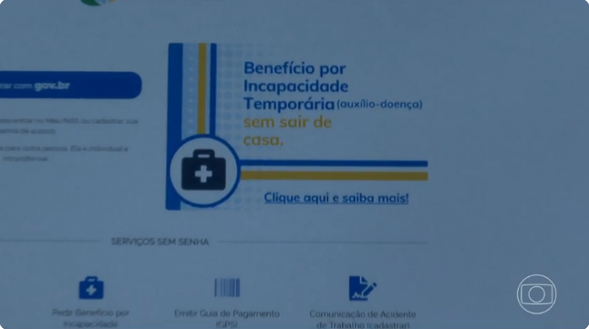

Fãs Comemoram reencontro entre Robert Downey Jr. e Tom Holland
Durante a cerimônia, Downey Jr. se reencontrou com Tom Holland, que foi seu colega de elenco nos filmes da Marvel.
Como o público já sabe, Holland interpreta Peter Parker/Homem-Aranha, que foi retratado como pupilo de Tony Stark (Downey Jr.) no MCU.
Por conta disso, os fãs ficaram bastante emocionando com o reencontro da dupla e estão comemorando o momento nas redes sociais.
Ler mais
Lift: Roubo nas Alturas terá continuação na Netflix? Tudo o que se sabe!
"Lift: Roubo nas Alturas”, o mais recente sucesso da Netflix, dirigido por F. Gary Gray e estrelado por Kevin Hart, pode estar a caminho de se tornar uma franquia. O filme, que envolve uma equipe tentando roubar ouro de um voo internacional para impedir que caia nas mãos de terroristas, estreou em 12 de janeiro na plataforma de streaming. Com uma recepção positiva do público, o diretor vê potencial para mais do que apenas uma sequência.
Ler mais

Invocação do Mal 4 | Novo filme tem título oficial revelado; Confira!
Segundo informações do Discussing Film, Invocação do Mal 4 terá o subtítulo de Last Rites (Os Últimos Ritos, em livre tradução)
Ler mais